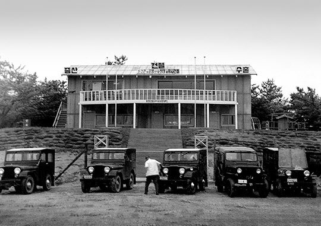
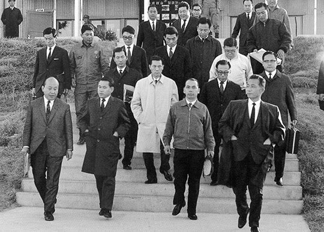
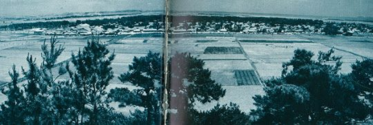
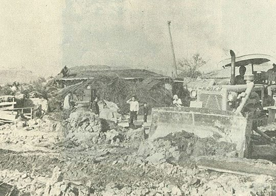

보도일 2014-11-14출처 조선일보 프리미엄조선 연재
1967년 여름에 이미 KISA를 ‘어중이떠중이 장사치들의 집합’이라고 의심했던 박태준. 가난한 한국정부에 차관도입이나 공장설립을 주선해온 공로를 앞세우며 KISA의 거간꾼 노릇까지 하고 있는 아이젠버그. 1968년 여름에는 아이젠버그가 훨씬 유리한 국면이었다. 아직 한국정부(박정희)나 포철 사장(박태준)에게는 KISA를 대체할 어떤 카드도 없었기 때문이었다. 다만, 박태준은 KISA를 떨쳐내고 일본과 하면 좋겠다는 생각을 희망처럼 품고 있었다. 그러나 파트너를 교체할 방법론이 없었다. 이에 대해 김철우 박사는 이렇게 증언했다.
<유태인이 하는 그 컨설팅 회사는 같은 제철 설비를 터키에도 팔아먹었는데, 결국 터키가 당했다. KISA의 프로젝트는 한국에 낡은 기계를 팔아먹기 위한 계획이었다. 포스코가 내게 그 계획서를 검토해달라고 보내왔는데, 계획은 엉터리였다. 60만 톤 계획이라면 실제로는 30만 톤 정도밖에 나오지 않는 내용이었는데, 이를 후지제철에 검토해 달라고 부탁했는데도 같은 의견이었다.
박태준은 내심 KISA와의 계약이 파기되기를 원했다. 결국 KISA와의 계약이 파기된 것은 잘된 일이다. KISA가 포스코 계획을 포기했기 때문에 이것이 오히려 포스코를 살렸다. 세계은행의 일본인 이사도 KISA의 한국제철소 계획이 엉터리라고 주장했다. KISA와의 계약이 파기된 것이 참 잘된 일이었다.>
1968년 초여름, 한국은 정치적 불안에 휩싸였다. 야당의 저항은 덮어두고 여당 내부만 보아도 후계자 문제로 분열과 파벌의 양상을 드러내고 있었다. ‘대통령 3선 불가’를 규정한 헌법 때문에 여당 내부에서 일어난 박정희 후계자 선정 문제, 이는 협상보다 헤게모니 선점을 위한 권력투쟁으로 접어들 공산이 높았다. 실제로 그런 파장이 일어났다.
1968년 5월 24일 국회의원 김용태가 김종필 의장을 박정희 후계자로 옹립하려다가 공화당에서 제명됐다. 5월 30일 김종필은 강력한 항의의 뜻으로 의장직을 사퇴하고 탈당함으로써 의원직을 상실했다. 여당 내부에서는 김성곤의 영향력이 그만큼 강화되었다.

서울 정치권이 권력투쟁과 여야대결로 혼미에 빠져들었으나 박태준이 이끄는 포항종합제철 건설 프로젝트는 조금씩 전진하고 있었다. 봄이 무르익은 영일만 건설현장에 초라한 건물 한 채가 탄생했다. 5월 1일 육완식 공사부장이 100만 원으로 지은 ‘포항사무소’. 슬레이트 지붕에 2층으로 짜인 60평짜리 그 목조건물은 조만간 ‘롬멜하우스’란 애칭을 얻으면서 건설 초기의 온갖 애환과 영광을 품게 된다. 그리고 요새는 포스코역사관으로 고스란히 옮겨져서 포스코에서 ‘회사 재산 1호’로 불리고 있다.
공사 진척 상황을 둘러보려고 현장을 방문한 건설부장관 주원은 바닷바람이 휘몰아치는 영일만 모래사장의 눈코 뜰 수 없는 광경을 지켜보며 중국의 황진만장(黃塵萬丈)에 빗대어 ‘사진만장(沙塵萬丈)’이라 표현했다. 그러면서 직원들에게 보안경을 사줄 것을 당부했다. 포항사무소는 낮에는 건설지휘 사령탑이요 밤에는 여남은 직원들이 책상을 침대 삼아 모포 몇 장으로 새우잠을 자는 숙소였다.
철거와 정지 작업에 나선 건설요원들은 사막전에 투입된 병사처럼 고된 작업을 감당해 나갔다. 누가 먼저였는지 어느새 그들은 건설 사령탑인 포항사무소가 제2차 세계대전 당시 사막의 영웅 롬멜 장군의 야전군 지휘소와 흡사하다며 ‘롬멜하우스’라 부르고 있었다. 1969년 봄에는 주변에 중장비들이 늘어나 사하라사막에 진을 친 기계화 부대 같아서 그 애칭이 더욱 실감을 얻는다.

6월 24일 유네스코회관에서 YMCA회관으로 이주한 서울의 포스코 직원들도 7월 8일부터 한층 바빠졌다. 피츠버그에서 40일 동안 포스코 검토단과 일본용역단이 지적해준 문제점들을 일부 반영하여 KISA의 일반기술계획, 그 문제투성이 GEP 4권(1만여 쪽)을 받아서 전면적인 검토를 다시 시작한 것이다. 포스코 직원들이 처음으로 제철 엔지니어링을 경험하는 일이기도 했다. 10일에는 아리가 단장을 포함한 일본용역단 9명도 합류했다. KISA에 요구할 GEP 수정 ‘공식’ 협상안을 작성하기 위한 협업이었다.
검토 결과에 따라 포스코는 당연히 요구할 수 있는 문제점 20개를 망라하여 ‘메모A’로 정리하고, 연산 60만 톤 능력을 원활히 달성하는 데 필요한 설비사양의 추가, 변경된 레이아웃에 대한 대안 등 75개 문제점을 ‘메모B’로 정리했다. 그리고 총 95개 문제점들을 7월 31일에 KISA 측에 제시하고 차관 도입과는 별개 협상으로 진행해 나간다.

철거작업에 속력이 붙은 1968년 여름의 포항제철 공장부지, 그 안에는 독립가옥 같은 조그만 학교가 하나 있었다. 초등학교, 그나마 분교(分校)였다. 이름은 ‘대송국민학교 송정분교’. 달랑 교실 두 칸의 이 분교는 1968년 여름방학이 끝나자 ‘송정국민학교’로 승격되었다. 교사들의 전학 업무를 도와주려는 당국의 배려였다. 승격과 거의 동시에 폐교되는 송정국민학교는 최고학년 4학년에 전기와 상하수도 없이 2부제 수업을 했다. 운동장이라곤 타작마당만 했는데, 그래도 모래바닥을 찰흙으로 덮어둬서 공을 튀길 수는 있었다.
송정분교 학생의 절반은 고아였다. 교실에서 삼백여 미터 떨어진 예수성심시녀회 고아원에 사는 전쟁과 빈곤의 고아들. 프랑스에서 귀화한 신부가 6‧25전쟁의 총반격 북진 직후에 설립한 수녀원은 어마어마한 대식구였다. 신부 2명과 수녀 160명이 500명 넘는 무의탁 인생을 돌보고 있었던 것이다. 아마도 동양 최대, 아니 세계 최대 규모의 고아원이었는지 모른다.
뒷날에 성립되는 역설이겠으나, 박정희와 박태준은 하필이면 빈곤 한국의 상징이나 다름없는 세계 최대 고아원 자리에다 세계 최고 제철소를 세운 것인데, 그 터에는 제강공장이 들어선다.
성모 마리아의 형제자매들이 수도하는 성전, 전쟁과 빈곤이 양산해놓은 소외된 자들의 요람―포항시 송정동(그때는 영일군 대송면 송정동)의 예수성심시녀회. 15년 넘게 온갖 정성과 노역을 바쳐 황무지 모래밭에 기적처럼 일궈놓은 그 성전, 그 요람을 어찌 함부로 덜컥 내놓을 수 있었으랴. 조국 근대화를 위해 거룩한 건물들과 터전이 희생되는 이야기는 그때 수녀님들의 목소리를 통해 직접 들어보는 것이 좋겠다.
